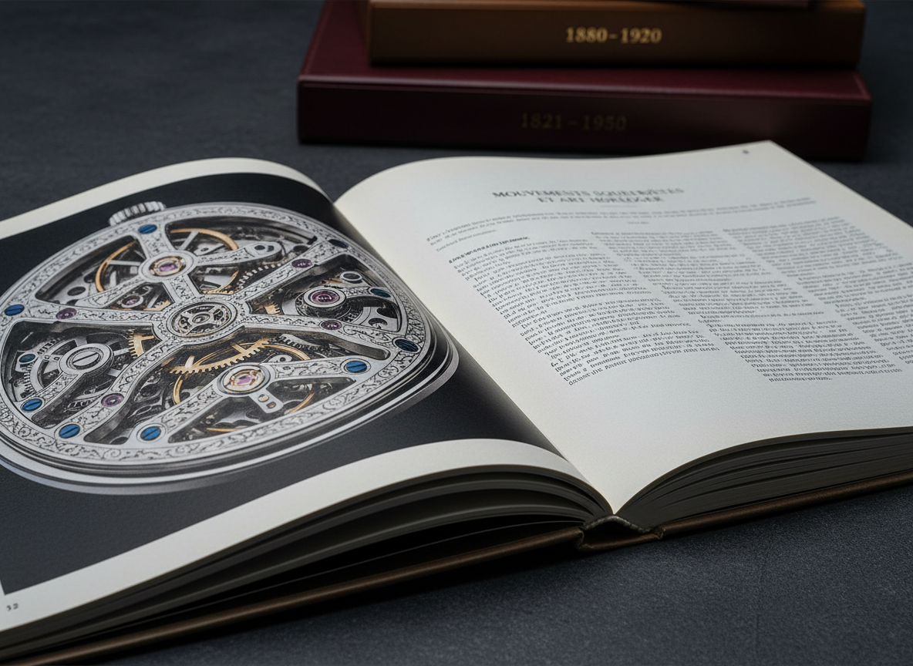
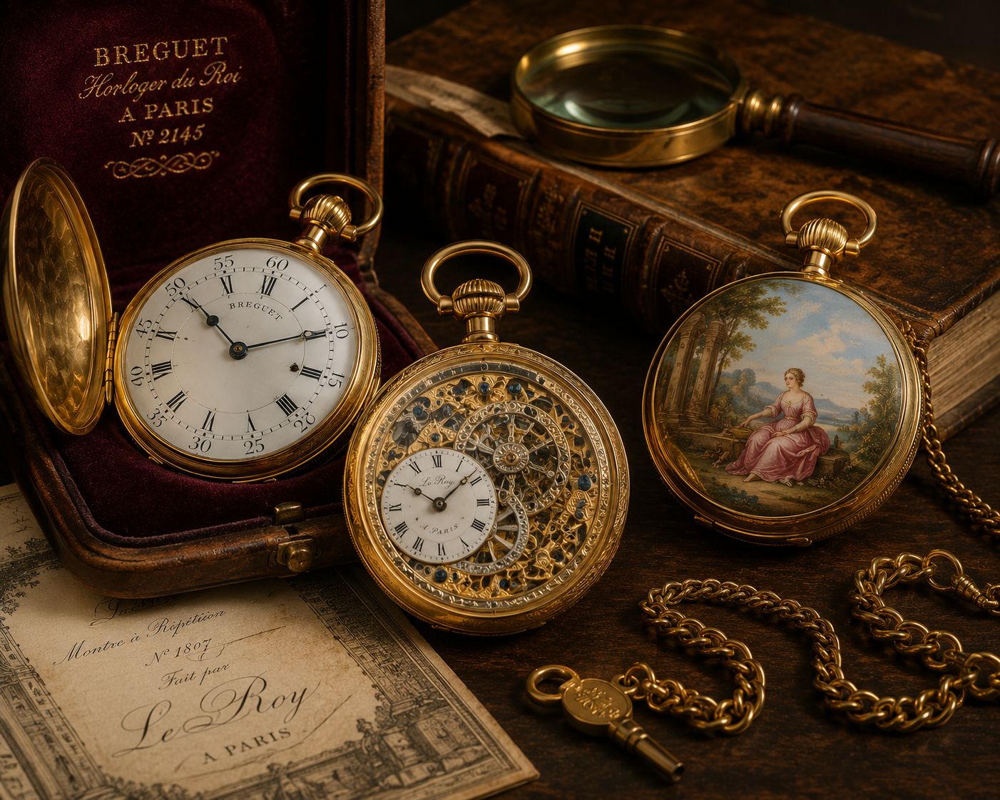

Esquisses
Des premières propositions inspirées par les codes du calibre et du design de montre de prestige.
Chaque projet est traité comme un objet de luxe, mêlant les codes de l’horlogerie, l’écriture et le graphisme pour une édition d’exception.
Des moodboards inspirés des cadrans, des boîtiers et des matières précieuses pour définir une identité horlogère distincte.
Tests de maquette, prototypes d’ouvrage et parcours tactile pensés pour les catalogues de montres de collection.
Des premières propositions inspirées par les codes du calibre et du design de montre de prestige.

Des volumes parfaitement équilibrés pour le lecteur, le beau papier et le format collector.

Un suivi flexible avec des points réguliers et des retours clairs, jusqu’à la validation finale.